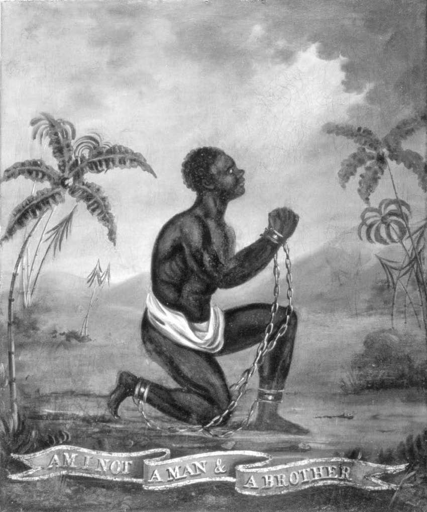

Pozitif, negatif ve doğal haklar
“Haklarım nelerdir?” sorusu basitçe bilgi almak için sorulabilir. Bu durumda sorunun açılımı şudur: “Bir kuruluşun ya da bir siyasi topluluğun kurallarına göre neler yapabilirim? Bu kuralları nereden öğrenebilirim?”
Üyesi olduğum kuruluşun kurallarına göre sadece bir konuk getirme hakkına sahip olabilirim. Ya da içinde yaşadığım topluluk bana yaya kaldırımında yürüme hakkı tanırken, onu kapatma hakkını tanımayabilir. Farklı insanlara farklı haklar tanınabilir: Bir ülkenin vatandaşları seçimlerde oy kullanma hakkına sahip olabilirken, yabancı ziyaretçiler olmayabilir. Bu bağlamda benim haklarım kuralların izin verdiği şeylerdir.
Çürük Zemine Köhne Yapı mı?
Toplumların bir yandan yapılmasına izin verilenleri diğer yandan geçilmemesi gereken sınırları nasıl geliştirdiğini görmek zor değildir. Ben özenle bir yay ve ok yaparsam, diğerleri benim bunları kullanma isteğimi korumaya alacaklardır; eğer birisi bunları zorla almaya kalkışırsa kınama ve cezayla karşılaşacaktır. Bir kadın ve erkek “eş olmak” isteyebilirler. Eğer toplum bu statüyü kabul ederse, bu statüyü göz ardı ederek çifte müdahale edenler toplum nazarında suç işlemiş olurlar. Hayvanlar arasında bile, kabul edilmiş bir statüyü suiistimal eden hayvanlara karşı sürünün düşmanca davrandığını gösteren işaretler vardır (bkz. Toplum Diye Bir Şey Var mı?). O halde söz-verme ve tutma sistemlerinin, mülkiyet sistemlerinin ve sonuçta hukuk sistemlerinin gelişimini anlayabiliriz. Bu sistemlere sahip olmak farklı “pozitif” haklara sahip olmak demektir. Bunlarla birlikte yapılmasına izin verilenler şeyler ve geçilmemesi gereken sınırlar, başkalarının karışmaması gereken statü sistemleri belirlenmiş olur. Bütün bunlar toplumsal inşalardır, yani onlar varlıklarını toplumun pratiklerine ve âdetlerine borçludur.
Varlıklarını bu sistemlere borçlu olan haklardan konuşmak yerine “kayıtsız ve koşulsuz” var olan “doğal haklar”dan söz etmeye başlayınca işler karışmaya başlar. Bazı filozoflara göre bu tür bir konuşma anlamsızdır. Nasıl ki “doğal trafik kuralları”ndan ya da “doğal siyasi sistemler”den söz etmek anlamlı değilse, “doğal haklar”dan söz etmek de anlamlı değildir. Haklardan bu şekilde konuşmak ahlaki ve siyasi tartışmalarda gerçek bir kullanıma sahip olamayacak kadar soyut ve kontrolsüzdür. Fransız Devrimi’nden sonra yayınlanan İnsan ve Yurttaşlık Hakları Bildirgesi’ne yönelttiği ünlü eleştirisinde hukuk kuramcısı ve filozof Jeremy Bentham şöyle diyordu: “Doğal haklar tam anlamıyla saçmalıktır: doğal ve yadsınamaz haklar retorik bir saçmalıktır – çubuklar üzerine kurulmuş bir saçmalık, ayağı yere basmayan bir saçmalıktır.” Devrimciler insanların “doğal, dokunulamaz ve devredilemez hakları”nı ortaya koyduklarını iddia etmişlerdi. Bentham’ın eleştirilerini yazdığı dönemde devrimin dehşet verici seyri insanların zihinlerinde hâlâ çok tazeydi. Bentham’a göre, “doğru” ya da “haklı” sıfatının “haklı eylem” ya da “haklı karar” gibi kullanımları yerindeydi:
Bu şekilde kalbin içine yerleşip anlayış gücünü ele geçirir: daha sonra isim biçimine bürünür, ve uygun yardımcılarıyla ortaklık kurarak isyan, anarşi ve yasasız şiddetin bayrağını açar.
Başka bir deyişle, o isim haline gelip de insanlar “haklar”dan söz etmeye başlar başlamaz her şey suya düşer:
“Hak, isim halinde hak, yasanın çocuğudur: Gerçek yasadan gerçek haklar gelir; ama şairler, hatipler ve tacirler tarafından ahlaki ve düşünsel zehir olarak icat edilen ve düşlenen imgesel yasalardan, doğanın yasalarından, canavarların, ‘uğursuz gorgonların ve chimaeraların’ soysuz yavrusu olan imgesel haklar gelir.”

DİZ ÇÖKEN KÖLE
İngiliz Okulu (18inci yüzyıl)
Betimleyici mi Kural Koyucu mu?
Doğal haklar kavramının gerçekten biraz tuhaf olduğunu düşünebiliriz. Belki de o kurallarını Tanrı’nın koyduğu “doğal” bir insanlık topluluğunun var olduğu fikrinin bir kalıntısı olabilir. Bu anlayışa göre, hepimiz genlerimize yazılmış olan belli haklar ve ayrıcalıklarla doğuyoruz. Kavramı, hayvan özgürlükçülerinin yaptığı gibi başka türlere ya da “derin” ekolojistlerin yaptığı gibi, doğal dünyadaki başka şeylere doğru genişletebilirsiniz. Bu durumda hayvanlar, ağaçlar, nehirler ve dağların da benzer bir yazgıya sahip olduğu düşünülecektir. Böyle bir anlayışın anlamlı olup olmadığını sormak için büyük bir şüpheci olmaya gerek yok.
Bu söylem hakların denetimsiz genişletilmesinin önünü açıyor gibi görünüyor. Bu durum insan dünyasında bir yığın soruna yol açar. İnsanların bir işe sahip olma hakları var mıdır? Tatil yapabilme, insana yaraşır bir yaşam standardına, korkudan ya da saldırıdan uzak yaşama hakkına sahip midirler? Din özgürlüğü çocuklarınıza istediğiniz saçmalıkları aşılama ya da onları ihtiyaç duydukları tıbbi bakımdan yoksun bırakma özgürlüğünü de içerir mi? Doğal dünyaya gelince işler daha da karışır. Bakterilerin hakları var mıdır? Çiçek virüsünü yok etmek soykırıma yakın bir şey midir? Eğer Colorado nehrinin denize kavuşma hakkı varsa, o zaman hakaret edilmeme ve suyunu kullandırmama hakkı da var mıdır? Bu kadar aşırı bir genişletmeye kadar varmasak bile, haklar uyarınca yürütülen ihtilaflı tartışmalar umudumuzu kırabilir.
Hak iddiaları genellikle hararetin yükselmesine neden olur. “Haklarımı biliyorum!” ifadesi aklımıza kıpkırmızı yüzüyle masaya yumruğunu vuran bir insanı getirir. Bu görüntü hiç de siyasi ve ahlaki çözümler bulma konusunda uyumlu, işbirliğine açık birinin görüntüsü değildir. Bu da haklar söylemine Bentham’ın ve daha sonra Karl Marx’ın eleştirisidir.
Bu eleştirilerin önemini yadsımadan şu soruyu soralım: “Bu eleştiriler sonucu kesin olarak belirleyebilen eleştiriler mi?” Ben bu soruya “hayır” cevabını veriyorum. Daha önce pozitif hakları toplumsal sistemler ve onların sınır, izin ve ayrıcalık yapıları uyarınca belirlemiştik. Ayrıca bir talebin parçası olan haklar söylemi kuralların değişebileceği anlayışını da içerir. Yürürlükteki yasalar sizin uçağınızla gündüz gece demeden evimin üzerinden havaalanına gitmenize izin verebilir. Ama ben iyi bir gece uykusu çekme hakkımın çiğnendiği gerekçesiyle bu çekilmez gürültüyü protesto edebilirim. Kentsel yaşam alanının benim iyi bir gece uykusu çekebilecek şekilde düzenlenmesi müesses hukuk nizamının bir parçası olmayabilir. Ama benim talebim olması gerektiği yönündedir. Gece uçuşuna karşı bir yasa olmalıdır. Benim haklarım ihlal edilmektedir. Ben olandan değil olması gerekenden söz ediyorum, ve bunu yapmanın en iyi yolu bir hak iddiasında bulunmaktır.
Sıkı bir demokrat olduğumu farz edin. Toplumun üyesi olan herkesin toplumun kaderi hakkında eşit söze sahibi olması gerektiğine inanıyorum. Siyasi kararlardan etkilenenlere bu kararların alınmasında eşit söze sahip olma fırsatı tanımayan siyasi sistemlerin hatalı olduğunu savunuyorum. Bu görüşlerimi halkın demokratik süreçlere katılma hakkına sahip olduğunu ve devletin bu katılıma imkân verecek şartları oluşturmamasının, ya da bunları ortadan kaldırmasının hak ihlali olacağını belirterek dile getirebilirim. Buradaki söylemim, doğanın insanlara doğuştan bahşettiği gizemli bir listeyi betimleyen bir söylemden çok kural koyan bir söylemdir.
Doğal haklar konuşmasını savunma söz dağarcığının bir parçası olarak görmeliyiz. Fransız Devrimi sırasında yoksullar ve ezilenler de muhtemelen onu büyük oranda böyle gördüler. Bu anlamda alındığında, nehirlerin denize ulaşma hakkı bile hazmedilemeyecek kadar metafizik değildir. Böyle bir açıklamada bulunan aktivistler basitçe insanların işleri nehirlerin denize ulaşmalarını engellemeyecek şekilde düzenlemeleri gerektiğini savunmaktadırlar. Bu savunmak için iyi bir şey olabilir de olmayabilir de. Çoğumuz muhtemelen nehirlerin denize kavuşmalarından mutlu oluruz; öte yandan, hepimiz su içmek zorundayız ve bunu çevremizdeki nehirlerden temin edebiliriz.
Genellemeler ve Temeller
Bentham’ın Fransız Haklar Bildirgesine yönelik temel şikâyeti şuydu: Onun son derece soyut dilinin kendi başına yerleşik bir siyasi düzeni devirmek için yeterli neden sağladığı varsayılıyordu.
Acele genelleme, entelektüel kibrin büyük ayakbağı! Acele genelleme, dehanın kendisinin bile çarpıp parçalanabildiği kaya! Acele genelleme, basiretin ve bilimin belası!
Bir hükümetin halkın özgürlük ya da eşitlik hakkını ihlal ettiği söylenebildiği anda, devrimcilere göre, bu onu devirmek ve başka bir hükümet kurmak için yeterli bir gerekçeydi. Ama bu kadar soyut biçimde ifade edildiğinde her hükümetin “haklar”ı ihlal edeceği söylenebilir. Birçok yasa, hepsini olmasa da, özgürlükleri kısıtlar; birçok devlet görevlisi, örneğin yargıçlar ya da vergi memurları, bazı kişilerin yapabileceği bazılarının yapamayacağı şeyleri belirlemeye çalıştıkları için ister istemez eşitsizliğe yol açarlar. Yargıç birilerinin özgürlüğünü sınırlayan kararlar verirken, vergi memuru gözdağı vererek para toplar. Yurttaş bunlara karşı çıkabilir. Bentham bu türden bir siyaset dilinin anarşiye davet çıkarmak olduğunu, herkesin haklarını garantiye alma kisvesi altında uygulanabilir hak düşüncesini imha ettiğini, dolayısıyla da herkesi haktan mahrum bıraktığını görmüştü.
Ancak bunu düzeltmek için haklar söylemini çöpe atmak yerine korunması gereken hakları ve bu korumanın ölçüsünü ve sınırlarını belirlerken çok daha özenli olmamız gerekir. Belli bir olgunluğa erişmiş toplumların hukuk tarihine baktığımızda bu sürecin sürekli evrim geçirdiği görülür. Bu doğal seyir içinde, haklarda sürekli inişler ve çıkışlar olur. Ben bunları yazarken, İngiltere’de, terörizmle mücadele etme adına, devlet gücünün pervasızca her şeyi izleyerek ve dinleyerek baskınlar yapmasından duyulan bir rahatsızlık vardı. Bu elbette siyasi bir durumdur; ama farklı siyasi çözümleri savunanların kendi görüşlerini ileri sürmek amacıyla haklar söylemini kullanmaması için hiçbir neden yoktur.
Hakların, siyasetlerin niçin savunulması gerektiğini açıklayabileceğini düşünmek felsefi açıdan işleri iyice zora sokabilir. Bu durumda birileri, devletin bir şeyi niçin sansürlememesi gerektiğini şöyle açıklayabilir: “Çünkü insanlar onu seçme hakkına sahiptir.” Ya da şöyle bir şey diyebilirler: “Siyasi meselelerde demokratik olarak karar vermeliyiz, çünkü halk siyasi sürece katılma hakkına sahiptir.” Burada hak, ileri sürülen siyasetin zemini olarak düşünülüyor gibidir. Bu da sanki bizi şu tuhaf metafizik hak fikrine, yani başvurduğumuz bir olgu, basitçe bir siyaseti savunurken kullanılan bir terim olmaktan ziyade siyasetin zemini olan hak fikrine döndürüyor gibidir. Böylece sanki şu her birimize doğuştan kazınmış gizemli menüye bir kez daha dönmek zorunda kalıyor gibiyiz.
Tartıya Çıkmak
Ancak illa da böyle olması gerekmez. Tüm kavram hakkında şüpheci olanların eline koz vermeden de bir siyaseti niçin savunduğumuzu bir hakka başvurarak açıklayabiliriz. Bunu söz konusu siyasetin daha önce tanınmış ve tesis edilmiş haklarla ne kadar uyumlu olduğunu göstererek yapabiliriz. Hepimizin bildiği birçok hukuki ve siyasi argüman bu şekilde kurulur. Örneğin, bir reklam, reklamcının özgür ifade hakkına dayanılarak savunulabilir, ya da bir reklama kamunun sahtekârlığa karşı korunma hakkı temelinde karşı çıkılabilir. Her iki taraf da kendi siyasi tavrını şöyle açıklayabilir: “Çünkü bu siyasi tavır hüküm sürmesi gereken yerleşik bir hakla uyumludur”.
Bu yerleşik pozitif haklar küresi içinde kalmak demektir. ABD Yüksek Mahkemesi’nin yasaların anayasaya uygunluğunu kılı kırk yararak ve eski yorumları da göz önünde bulundurarak incelerken yaptığı da budur. Bentham’ın öngördüğü gibi, toplumun iyiliği açısından bakıldığında sonuç sıklıkla gülünç olabilmektedir. Bağlamı düşünüldüğünde açık bir şekilde halkın ülkesini savunmak için silahlı milis oluşturma hakkını belirten 18. yüzyıldan kalma “halkın silah taşıma hakkı”nın, herhangi bir bireyin 20. yüzyılın saldırı silahlarına ve elbette bombalarına, zehirli gazlarına ve taktik nükleer silahlarına sahip olma hakkını içermesinin önünde hiçbir engel yoktur. Bu yöntem özü itibarıyla kutsal bir metnin anlamının incelenmesini öne çıkaran skolastik bir yöntemdir. Bu örnekte de görüldüğü gibi süreç içinde, örneğin insanların devletten güvenliklerini korumalarını isteme hakkı gibi hakları unutulmuş görünmektedir.
Doğal haklar listesinde yer alan bazı maddelerin insanlar hakkında genel ve inkâr edilemez meşru gerçekler olduğu gösterilemez mi? Eğer bu mümkün olsaydı, ahlak teorisi adına çok iyi bir şey olurdu. Tarihsel olarak en umut vaat eden aday “ortak” rasyonelliğimizdir. Bu varsayım altında gösterilmeye çalışılan şöyle bir şey olacaktır: “Bizler bilinçli, müzakere eden, seçen canlılar olduğumuz için, herhangi bir meşru toplumun değişik türden özgürlükleri garanti eden ilkelere sahip olması gerekir.” Felsefi yönüne bakıldığında liberalizmin bu yolu izleyen bir öğreti olduğu söylenebilir. Liberalist önce şapkanın içine kabul edilmiş kapasitelerimizi koyar, sonra şapkadan her birimizin sahip olacağı hakları çıkarır: İfade özgürlüğü, din özgürlüğü, hukuk çatısı altında özgürlük, adil yargılanma hakkı, siyasi sürece katılma hakkı gibi. 20. yüzyılın seçkin liberal teorisyeni John Rawls eserlerinde, meşru devletin temel yapısını, toplumsal sözleşme düşüncesinin özgün bir uyarlamasıyla, işbirliği içinde bir arada yaşamalarını sağlayan kuralları rasyonel olarak seçen özgür failler fikrinden türetir.
Ancak bir kez daha bu girişimin üzerine Bentham’ın gölgesi düşer. Bu tür türetmenin (Rawls’ın kendisinin de kabul etmek zorunda kaldığı gibi) çok özgül bir şey ortaya çıkarması pek mümkün değildir, ama, gördüğümüz gibi, tek-kelimeli özgürlüklerin ve hakların özgülleştirilmesi gerekir. Uçların törpülenmesi gerekir: İfade özgürlüğü yalan ya da iftira niteliğindeki ifadeleri içermez. Peki görünüşte hiçbir kötü niyet taşımayan bir ifade bile benim mesleki veya toplumsal olarak zarar görmeme neden oluyorsa, ne olacak? Tek-kelimeli soyut haklar birbirleriyle çatışma halindedir. Tanrı’ya ve kutsal değerlere hakaret olaylarında, din özgürlüğüyle ifade özgürlüğü çarpışır. Benim iyi bir gece uykusu çekme hakkımla kamunun yolları yirmi dört saat kullanma hakkı, ya da hava yolu şirketlerinin uçuş zamanlarını belirleme hakkı çatıştığında nasıl karar verilecek? Ayrıca iyi bir gece uykusu sonuçta bir haktan ziyade bir istek değil midir? En temel ve devredilemez siyasi hak sayılan siyasi sürece katılma hakkının bile sınırlanması gerekebilir. Ya siyasi sürece katılan büyük bir grup sonuçta hiç kimsenin siyasi sürece katılamayacağı teokrasi lehine sürecin kendisini yok ederse? Oy verme hakkını askıya alma girişimi meşru kabul edilebilir mi? Hiç kimse bireylerin rasyonel özbilincine ya da seçme özgürlüğüne ilişkin son derece soyut düşüncelerin böylesi detayları çözebileceğini düşünmez. Hakların diğer pratik meseleleri gölgede bıraktığı varsayılır. Ama birbiriyle yarışan hakların karşısında teraziye çıktıklarında, değerlendirildiklerinde ve dengelenmeye kalkıştıklarında vaat ettikleri açıklık kaybolur.
Emperyalizm, Çokkültürlülük, Cemaat
Belki de böyle olması iyidir. Detaylı haklara ilişkin çok emin olduğumuz bir rasyonel hesaplama yöntemine sahip olduğumuzu düşündüğümüz anda emperyalizm hayaleti başını gösterir. Yasaları ve töreleri bizimkilere uymayan cemaatler ve uluslar olacaktır. Bentham’ın Fransız Haklar Bildirgesi’nin “önselci” akılsalcı diline yönelttiği ithamlardan birini şu şekilde özetleyebiliriz: “Onu birebir aldığımızda dünya üzerindeki hiçbir hükümet meşru olamaz. Bu da bu bildirgenin devrimcilere, ilke olarak, hedeflerine aldıkları Avrupa’nın, ya da dünyanın diğer uluslarına kendi hükümet görüşlerini dayatma konusunda sınırsız yetki tanıması anlamına gelir.” O halde insan yaşamının inkâr edilemez, genel özelliklerinden türetilebileceği düşünülen haklar söylemi onları gerektiği gibi geliştirecek zekâda olan bizlere, bu zekâdan mahrum olan cahil ötekilere müdahale etmemizi meşrulaştırmamızı sağlayabilir. Bu son derece tehlikeli bir yaklaşımdır. Buna göre biz akıllılar tarafında yer alırken ötekiler akılsızlar tarafında yer alır. Bu açıdan bakıldığında, haklar dili, imansızların varlığına dayanamayan, kendi keşiflerini küreselleştirmeye, herkesi kendi gibi yapmaya, başkalarının başka yerlerde geliştirdikleri alternatifleri ise bastırmaya çalışan yeni bir din dilinin rolünü üstlenir.
Ancak bu “cemaatçiliğe” ya da her cemaatin geliştirdiği yönetim ya da hukuk biçiminin o “cemaate göre” doğru olduğunu söyleyen bir tür göreciliğe dönmek değildir. İster eski ister yeni olsun cemaatler marjinal gruplara, ezilenlere, kadınlara, farklı dinden olanlara, “Öteki” olarak damgalananlara, sınırı geçenlere karşı acımasız davranabilmekte ve onlara içeridekilere tanıdıkları hakları ve imtiyazları tanımayabilmektedir. Gerçek baskı ve adaletsizliğin nedenlerini anlamak için kendi haklar bütçemize “metafizik” bir takviye yapmak zorunda değiliz. Kötü toplumlarda yanlış olan onları kötü yapan her neyse odur, ve bunlar nadiren akla, nedenlere ilişkin hatalarıdır. Sorun insanların kafalarıyla ilgili olmaktan ziyade yürekleri, korkuları, hasetleri, önyargıları ve tarihsel husumetleriyle ilgilidir.
<>
Bu açıdan bakıldığında, haklar dili,
imansızların varlığına dayanamayan, başkalarının
başka
yerlerde geliştirdikleri alternatifleri bastırmaya
çalışan yeni bir din dilinin rolünü üstlenir.
<>
Sıklıkla olduğu gibi buradan da çıkarabileceğimiz ders dikkatli olmamız gerektiğidir. Törelerde ve yasalarda özetlenen ve tesis edilen sıradan haklar söyleminde bir sorun yoktur. Belli siyasi tavırların ve değişim taleplerinin savunulmasında bir sorun yoktur. Bir siyasi tavrın meziyetleri konusunda birbirimizi ikna etmeye çalışırken haklar dilini kullanmak da son derece akla yatkın bir tutumdur. Ama hakların savunmalarımıza bir tür metafizik temel sağladığını düşünmek doğru değildir. Ve akıl sahibi herkes için her yerde geçerli olan tek ve açık bir haklar hesabı olduğunu düşünmenin birçok tehlikesi vardır. Bu, Bentham’ın düşündüğü gibi, anarşi reçetesi olmasa bile, kesinlikle kendini beğenmişlik reçetesidir. Bu yaklaşım yasaların ve siyasetlerin hikmeti hakkında tam anlamıyla insani ve çok boyutlu olan, ve bir arada yaşayabilmemiz için elzem olan düşüncenin yerine bir tür çorak skolastizmi geçirmektir. Ne diyelim: Tüm risk alıcıya aittir